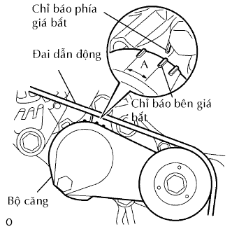

ĐAI DẪN ĐỘNG > LẮP |
| 1. LẮP ĐAI DẪN ĐỘNG |
 |
Lắp dây đai dẫn động vào các puli trừ puli bộ căng đai.
Dùng một chi tiết có hình lục giác được chỉ ra bởi mũi tên trên hình minh hoạ để dịch chuyển puli bộ căng đai xuống và sau đó lắp đai dẫn động lên puli căng đai.
|  |
Sau khi đã lắp một dây đai mới, hãy kiểm tra rằng dấu chỉ báo của bộ căng đai nằm trong vùng A như trong hình vẽ.